👀
Le regard droit devant
L'écran monte à hauteur des yeux : vous ne passez plus la journée tête baissée.
Plusieurs niveaux de hauteurHomeDesk se pose sur votre bureau actuel et vous permet de passer d'assis à debout en 5 secondes, aussi souvent que vous en ressentez le besoin.
À partir de 169 DT · Paiement à la livraison · 3 jours pour essayer
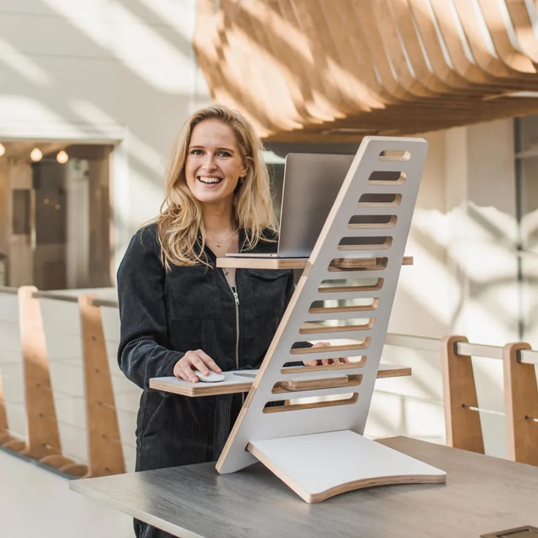
🧘Assis ↔ debout en 5 sec 👀Écran à hauteur des yeux« Le matin ça va. Le soir, j'ai la nuque raide et le dos qui tire. »
Vous n'êtes pas seul. Quand on travaille des heures devant un écran, le corps reste dans la même position du matin au soir. Et c'est souvent là que l'inconfort s'installe.
Le dos est droit, l'énergie est là. Tout va bien… pour l'instant.
Sans vous en rendre compte, vous vous penchez vers l'écran. Les premières tensions apparaissent.
La nuque est raide, le bas du dos tire. Et demain, la même journée recommence.
Ce n'est pas votre faute. Ce n'est pas un manque de volonté.
C'est la position figée qui fatigue votre corps.
Changer de position ne fait pas de miracle. Mais ça évite de rester des heures dans la même posture.
Écran trop bas, tête penchée en avant pendant des heures.
Écran à hauteur des yeux, assis comme debout
Elles remontent et se crispent au fil de la journée.
Clavier sur sa propre étagère, bras plus détendus
Le dos s'arrondit quand on se rapproche de l'écran.
Debout, on se tient plus droit naturellement
Assis sans bouger, la raideur s'installe.
Alterner assis et debout pour bouger plus souvent
Pas besoin d'acheter un nouveau bureau ni de tout réaménager. HomeDesk s'ajoute à ce que vous avez déjà.
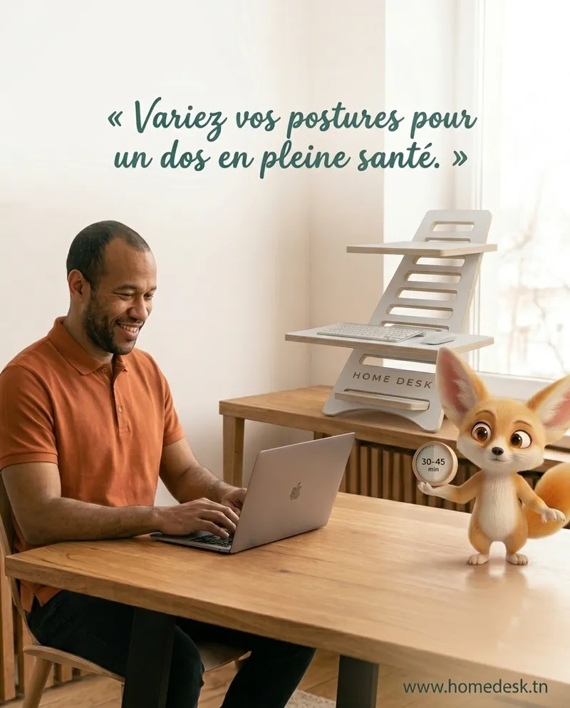
Le plus difficile, ce n'est pas de se lever. C'est d'y penser quand tout est installé pour rester assis. Avec HomeDesk, changer de position ne demande ni réglage compliqué ni déménagement de votre poste.
Exemple de journée : vous alternez selon votre énergie et vos besoins.
L'écran monte à hauteur des yeux : vous ne passez plus la journée tête baissée.
Plusieurs niveaux de hauteurVous sentez la raideur arriver ? Levez-vous et continuez, sans rien débrancher.
Assis ↔ debout en 5 secondesIl se démonte et se transporte dans son sac, pour garder vos habitudes partout.
Sac de transport offert · valeur 85 DT💳 Vous ne payez qu'à la réception
Faites glisser pour comparer les deux postures.
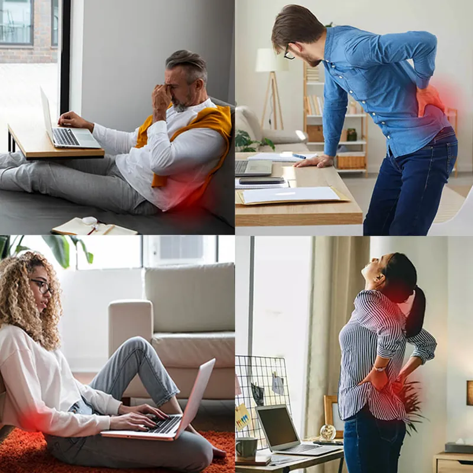
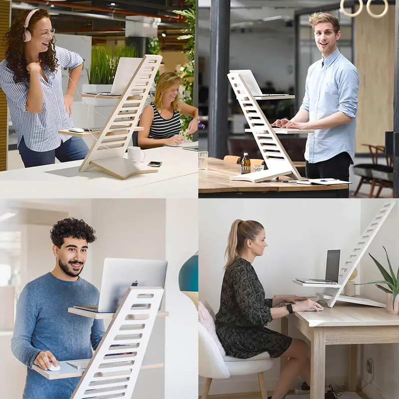
AVANTAPRÈS4,9/5 · +200 professionnels équipés en Tunisie
« Je finissais mes journées avec la nuque raide. Maintenant je passe debout l'après-midi, et je me sens nettement moins tendue le soir. »
« Ce qui m'a convaincu, c'est la simplicité : je change de position en quelques secondes, sans y réfléchir. Mon écran est enfin à la bonne hauteur. »
« J'hésitais, alors j'ai profité des 3 jours d'essai. Je l'ai gardé : alterner assis et debout est devenu un réflexe, et mes fins de journée sont plus confortables. »
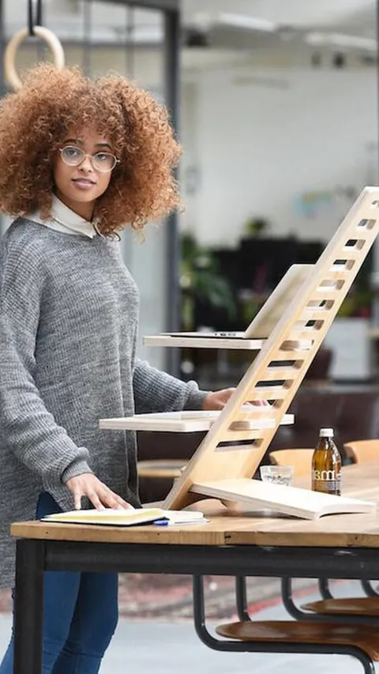
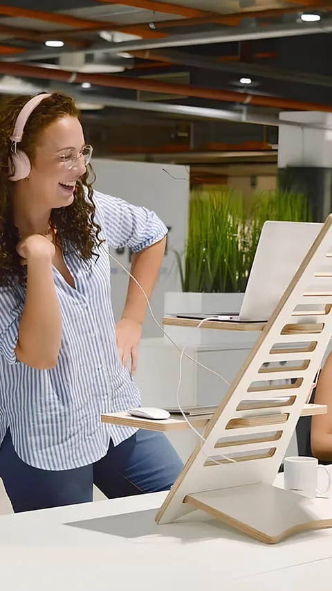
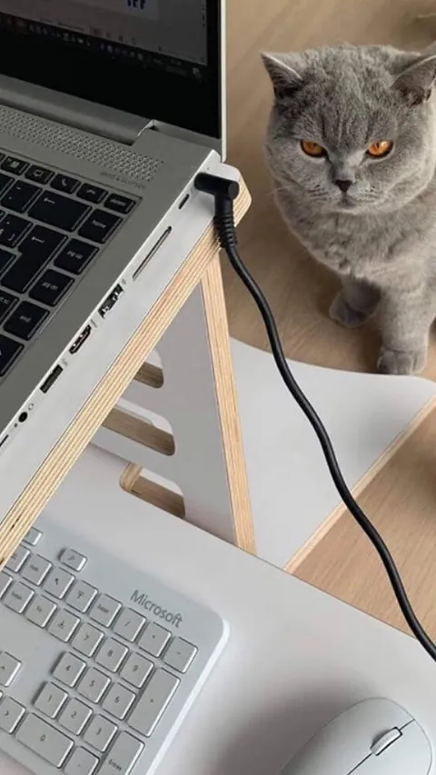
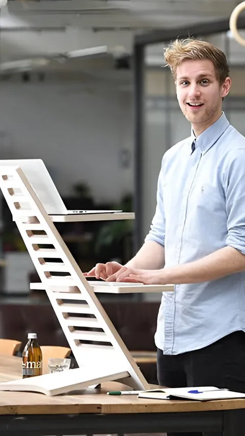
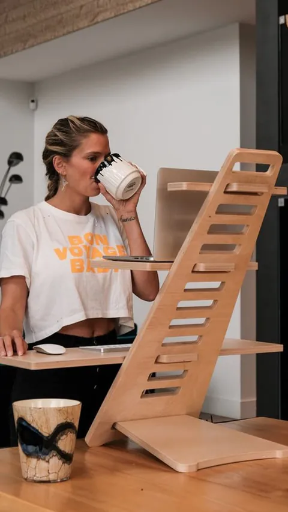
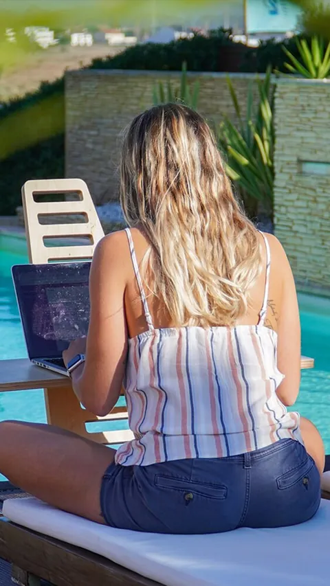
On préfère être clair avec vous : HomeDesk n'est pas un traitement et ne remplace pas l'avis d'un professionnel de santé. Ce qu'il fait, il le fait bien :
Le mieux reste encore de juger par vous-même : vous avez 3 jours pour l'essayer chez vous, et vous ne payez qu'à la réception.
Pas convaincu ? Satisfait ou remboursé.
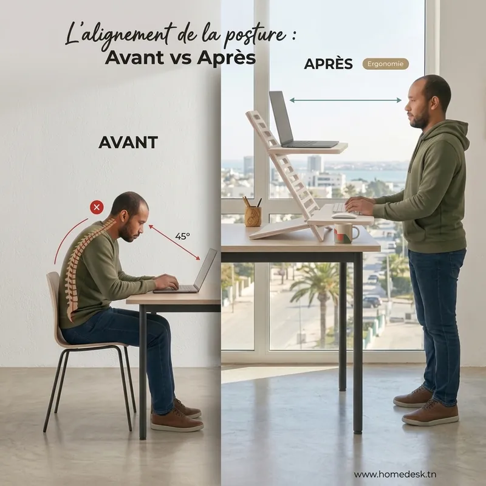
Moins de 1,87 m → Medium. Plus de 1,87 m → Large, plus haute pour que l'écran reste à hauteur des yeux.
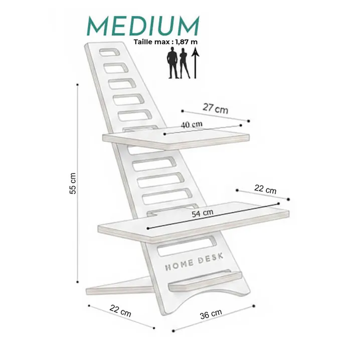
Jusqu'à 1,87 m · hauteur 55 cm · sac de transport + porte-clés
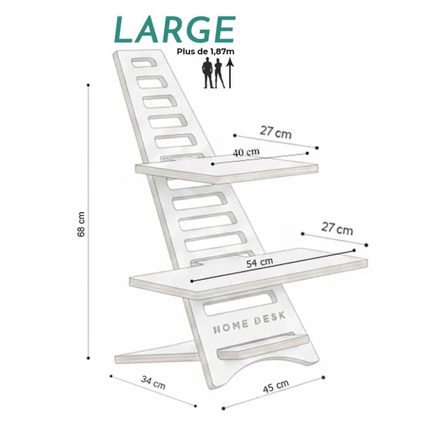
Plus de 1,87 m · hauteur 68 cm · étagère tél/tablette en plus
Il restera toujours au même endroit ? HomeDesk Essentiel dès 169 DT (sans sac, −30 DT).
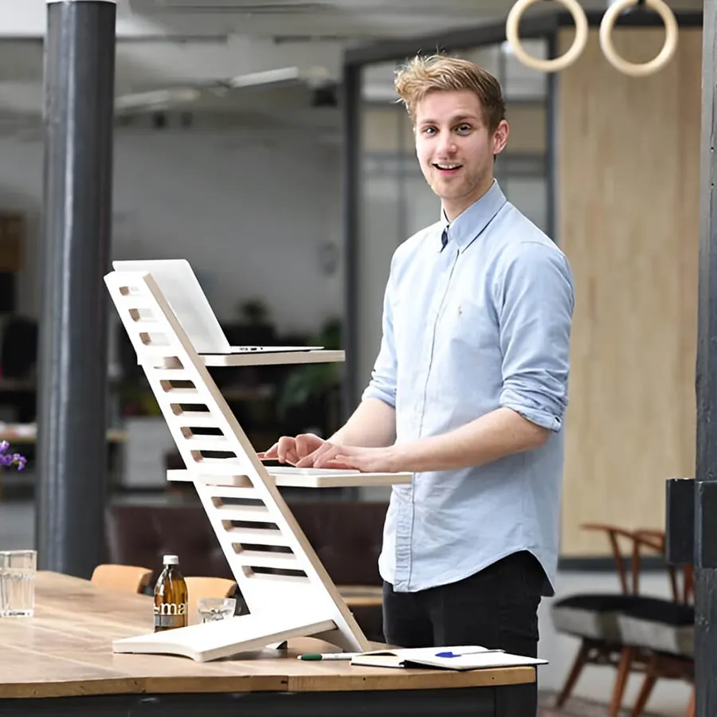
Vous payez seulement à la réception. Ensuite, vous avez 3 jours pour l'essayer dans vos vraies journées de travail. Si vous ne ressentez pas la différence, vous êtes remboursé.
Non. HomeDesk n'est pas un dispositif médical et ne soigne aucune pathologie. Il permet d'alterner facilement entre position assise et debout et de placer l'écran à hauteur des yeux. En cas de douleur persistante, consultez un professionnel de santé.
Il n'y a pas de règle unique : l'idée est d'alterner selon vos sensations et votre énergie. HomeDesk rend ce changement simple, en 5 secondes, pour que vous bougiez plus souvent.
Medium si vous mesurez jusqu'à 1,87 m (hauteur 55 cm). Large au-delà de 1,87 m (hauteur 68 cm, avec une étagère pour téléphone ou tablette en plus).
HomeDesk est découpé à la CNC dans du MDF stratifié blanc de 18 mm d'épaisseur. Il accueille un PC portable jusqu'à 17 pouces, avec une étagère séparée pour le clavier et la souris.
Non. Les pièces s'assemblent sans outil, en quelques minutes, et il se pose directement sur votre bureau ou votre table actuelle.
HomeDesk garde votre bureau actuel et y ajoute la position debout. Il est compact, portable, sans moteur, et bien moins cher qu'un changement complet de bureau.
À la livraison, en espèces. Aucun paiement en ligne, aucun acompte. La livraison est gratuite partout en Tunisie.
Vous avez 3 jours pour l'essayer chez vous. Si vous n'êtes pas satisfait, vous êtes remboursé.
HomeDesk n'est pas un dispositif médical. En cas de douleur persistante, consultez un professionnel de santé.
Gardez votre bureau, ajoutez la position debout, et alternez dès que votre corps vous le demande. Vous ne payez qu'à la réception.
Dès 169 DT · Livraison gratuite · 3 jours pour essayer